Documentation for Network Enrichment workflow¶
This is a guide for Network Enrichment Workflow in the collaborative microbial metabolite center knowledgebase (CMMC-kb).
Important Links:¶
Molecular Network Enrichment Workflow (cmmc_gnps_network_enrichement_workflow)¶
-
Log in to your GNPS2 account.
-
Navigate to the GNPS2 website and click on the “Launch Workflows” button
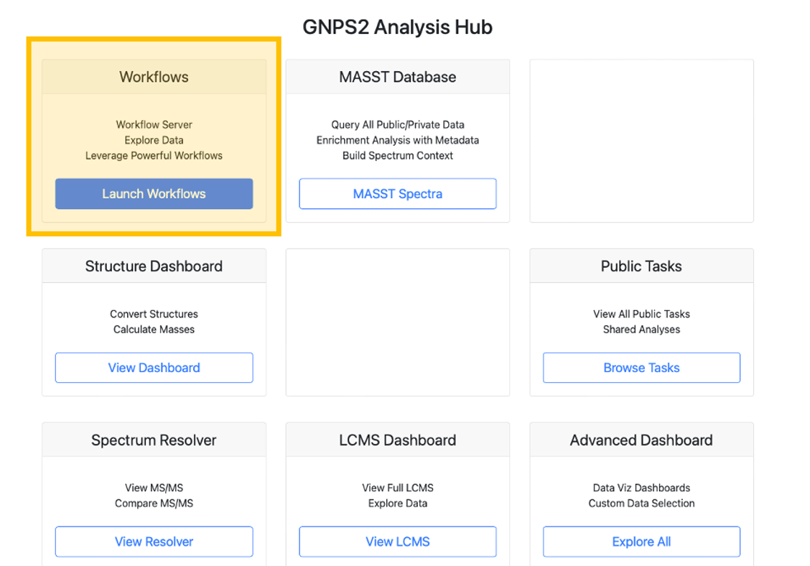
- This will show the list of available workflows on GNPS2. from this list, select the “cmmc_gnps_network_enrichment_workflow” and click on “Launch Workflow” to start.
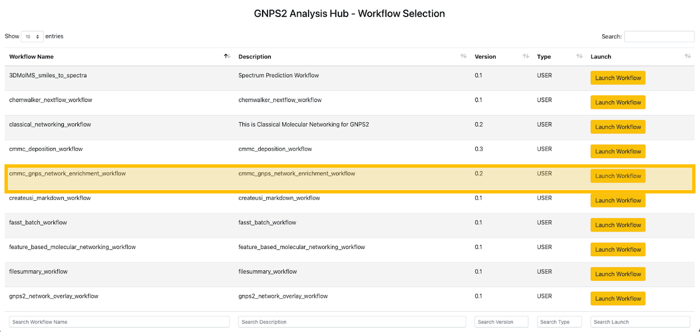
-
At the “Job Description” field you are free to fill in what you want (eg. name of network you want to enrich).
-
Under the “File Selection” section, you will have to enter the “GNPS Networking Task”
It is the taskID from the molecular networking job that was performed on GNPS1 (https://gnps.ucsd.edu/). For instance, for this job that was run in GNPS1: https://gnps.ucsd.edu/ProteoSAFe/status.jsp?task=9c5a9839da084a258c588c61fe33be61
The input in the “GNPS Networking Task” is: 9c5a9839da084a258c588c61fe33be61
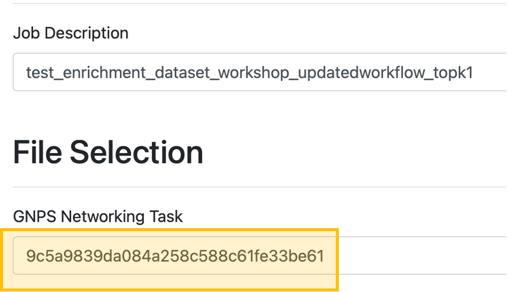
- Choose the type of network to be enrich:
- Classical: Select Classical if the original molecular networking job was run on the classical workflow (i.e., the data was not pre-processed prior to molecular networking).
-
FBMN: Select FBMN (Feature-based molecular networking) if the data was pre-processed prior to molecular networking in software like MZmine, OpenMS, MS-DIAL, etc.
-
In the “Library Search” section, fill out the following fields.
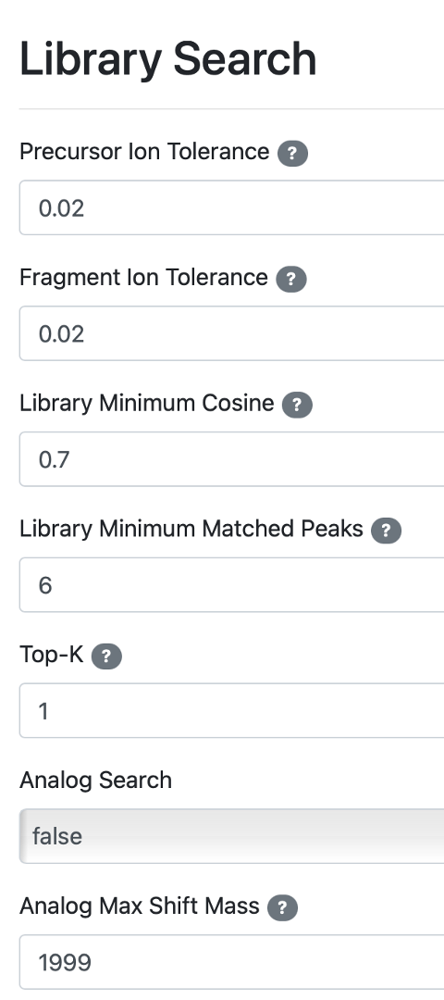
-
Precursor Ion tolerance: Parameter used for spectral library search, expressed in Daltons. This value specifies how much the precursor ions can be shifted from their expected m/z values. Note that the value of this parameter should be consistent with the capabilities of the mass spectrometer and the specific instrument method used to generate the MS/MS data. Recommended value is ± 0.02 Da for high-resolution instruments (q-TOF, q-Orbitrap) and ± 2.0 Da for low-resolution instruments (ion traps, QqQ).
-
Fragment Ion Tolerance: Parameter used for MS/MS spectral library searches. This value specifies how much fragment ions can be shifted from their expected m/z values. Recommended Values value is ± 0.02 Da for high-resolution instruments (q-TOF, q-Orbitrap) and ± 0.5 Da for low-resolution instruments (ion traps, QqQ).
-
Library Minimum Cosine: Minimum cosine score between the spectra being searched and the ones deposited in the CMMC libraries. Lower cosine values can increase the number of false hits, as it becomes less strict. Default: 0.7
-
Library Minimum Match Peaks: Minimum number of common fragment ions that are shared between the queried spectrum and the ones deposited in the library. Default value is 6, but note that this parameters should be adjusted depending on the molecule of interest, the experimental conditions for mass spectra acquisition (such as mode of ionization, fragmentation conditions, the mobile phase, etc.), and the collision-induced fragmentation settings of the molecules of interest within the samples. High molecular weight (MW) compounds and compounds with more hetero-atoms generally tend to produce more fragment ions. However, this rule is not absolute. For example, some lipids with high MW generate only a few fragment ions. Default: 6
-
Number of results to report per query: The maximum number of library hits that a queried spectrum can have, considering the settings of the other parameters. Default: 1
-
Analog Search: Enables analog search. Matches query spectra against library MS/MS spectra with a modification tolerant search (different precursor ion mass value). The results have to be carefully curated, since this will introduce more false positives. Default: False
-
Analog Max Shift Mass: Maximum mass shift between the library and putative analogs found.
-
Once you have finished filling out the fields, you can click on the button “Submit workflow”.
-
After the status of the job is marked as Done, a first overview of the results can be achieved by clicking on “CMMC Search Results”.
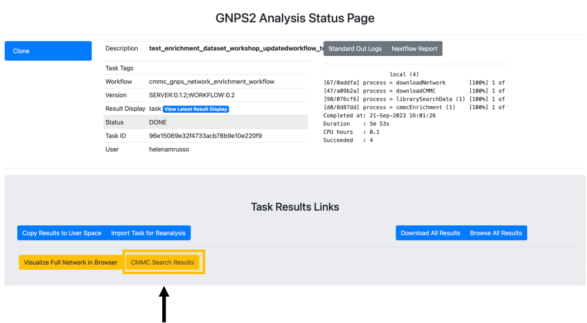
- After clicking on “CMMC Search Results”, a new window opens that looks like this one, and rapidly you can see which metabolites deposited in CMMC matched with the experimental spectra. In addition, you can see which microbes produce these compounds (in the example below, deoxycholic acid conjugated to alanine).
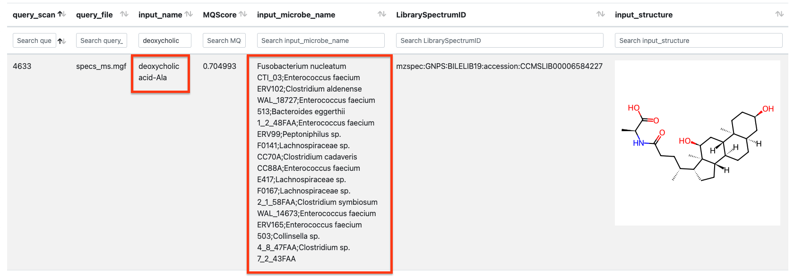
- To do molecular networking, scroll down under the “Task Results Links” and click on "Browse All Results” if you want to specifically download the results for the molecular networking visualization. You can also click on "Download All Results" if you want to have all files in your local computer.
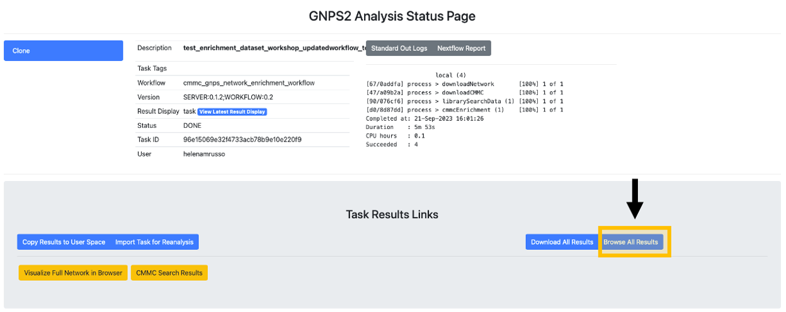
-
In the “gnps_network” folder, download the “network.graphml” file that will be imported in the Cytoscape software.
-
In the “cmmc_results" folder, download the “cmmc_enriched_results.tsv” table, which will be uploaded later on on Cytoscape.
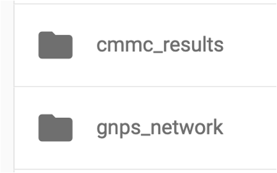
Network Enrichment Visualization in Cytoscape¶
Cytoscape is an open-source software platform for visualization and annotation of networks. Cytoscape is available for download from here. The instructions below assume that you have installed Cytoscape 3.10.1.
- Now open Cytoscape 3.10.1. From the Toolbar, go to File / Import / Network from File and then select the .graphml file (see point #10 if necessary). You can also drag and drop this file into Cytoscape. You can select whichever style you prefer after that.
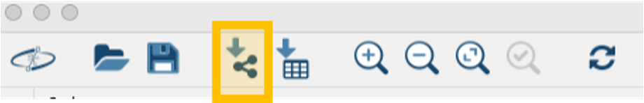
- From the Toolbar, go to File / Import / table from File and then select the .tsv file (see point #11 if necessary).
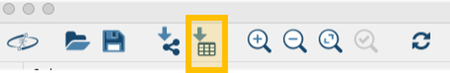
- A new window will open that will look like this.
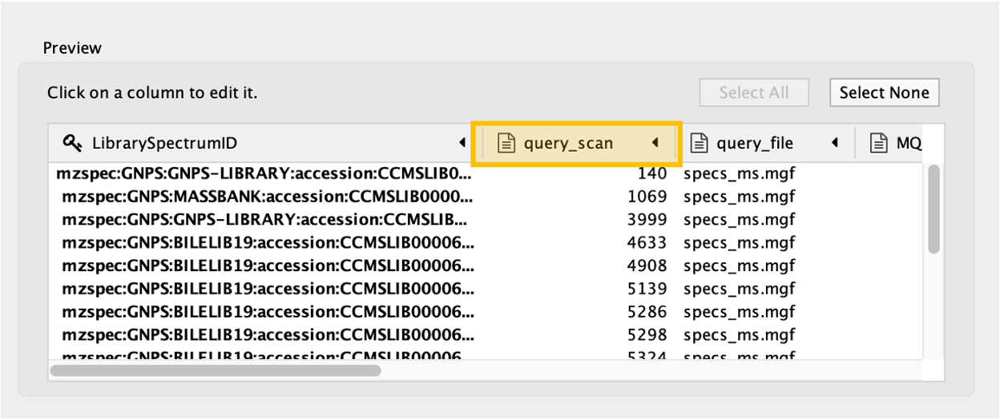
Click on the “query_scan” column of the table to be imported, and click on the “key sign”. This means that this column will be directly compared with the "shared name" column under the Key Column for Network field. In this case, "shared name" is already part of the .graphml file initially imported and it is an information referred to the cluster index (if a classical molecular networking job was run), or to the scan number (if FBMN job was run).
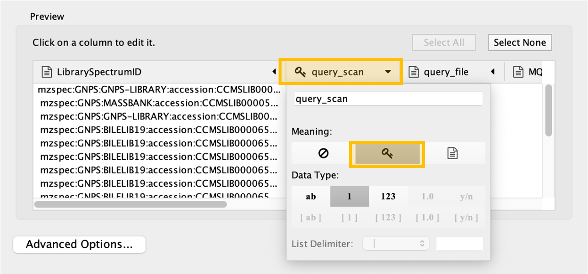
- All the columns present in the imported table can now be observed in the note table, including the “input_microbe_name” column.
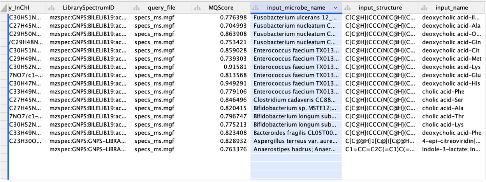
-
On the left side menu, under the “Fill Color”, in the column select “input_microbe_name” and under “Mapping Type” select “Discrete Mapping”.
-
Select all the rows that show up (lists of microbes), right-click and “Edit” then, “Edits Selected Discrete Mapping Values”. Then, select the color of your choice and your network should like this. In this case, the nodes that are colored as green represent features that had a library match with the spectra deposited in CMMC and that have microbial information associated with them.
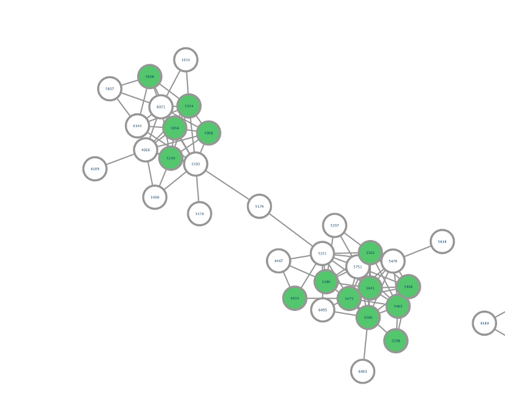
- On the left side, under the “Label”, in the column select “Library_compound_name” and under “Mapping Type” select “Passthrough Mapping”. In this way, the compound names that were retrieved from CMMC can be shown as nodes labels.
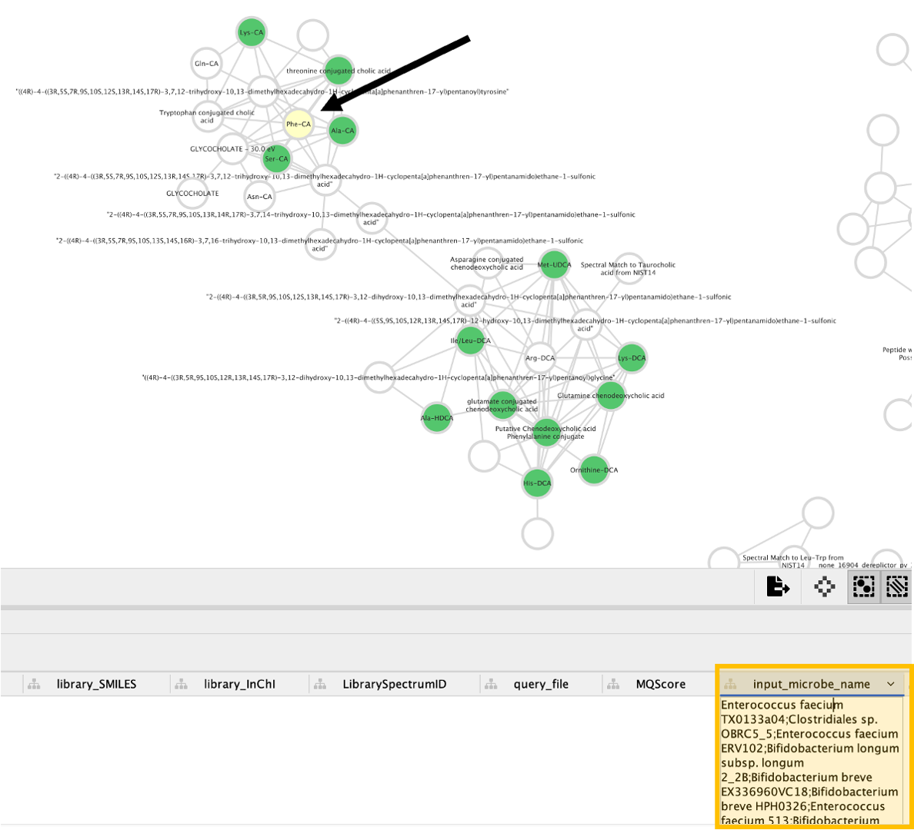
- Conclusion: Now, we can see all the microbial-conjugated bile acids (MCBAs) (green nodes), especially which microbes (see yellow box) can produce Phe-CA (see black arrow).
Page Contributions¶
Vincent Charron-Lamoureux, Helena Mannochio-Russo